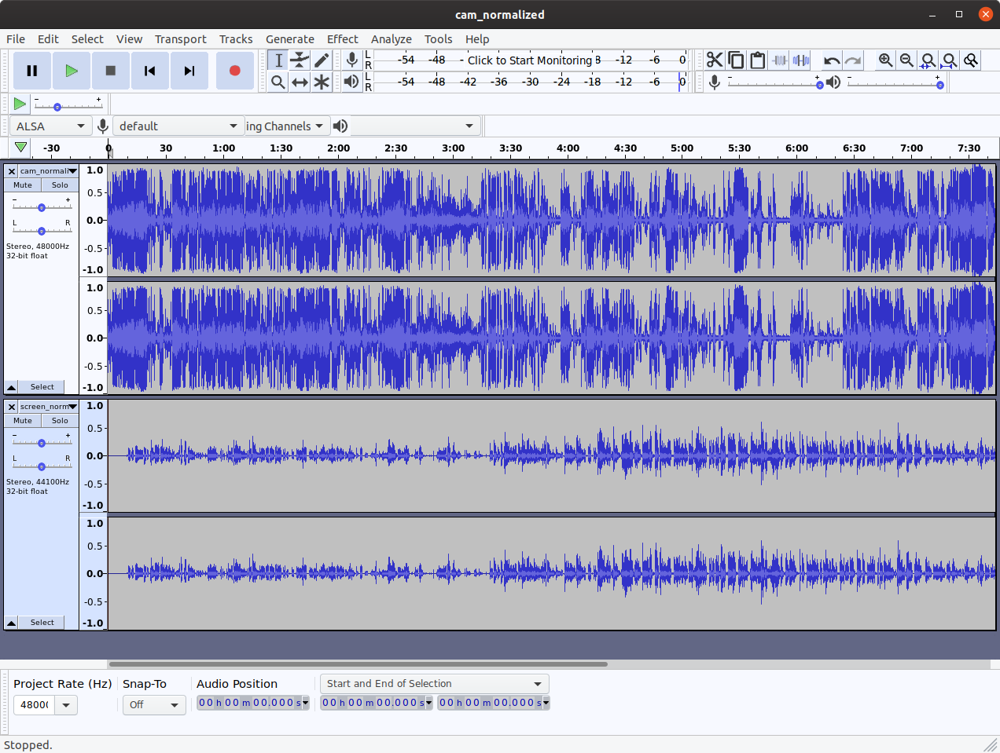
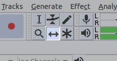
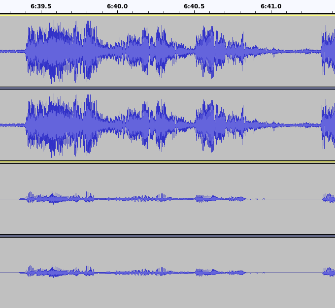
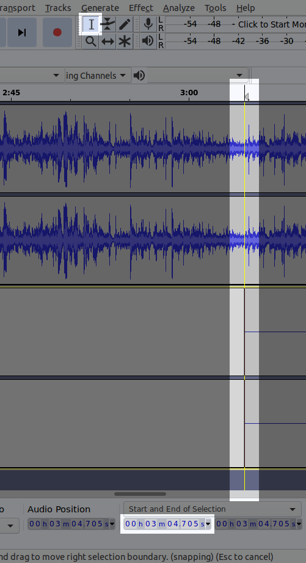
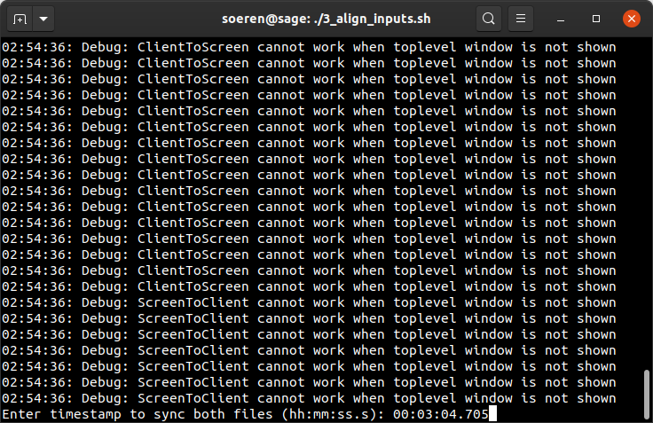
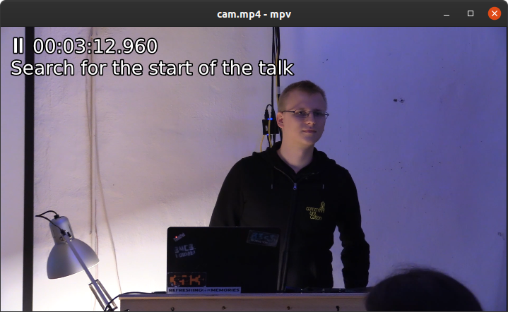
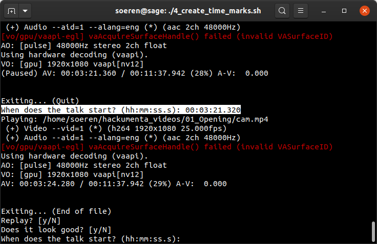
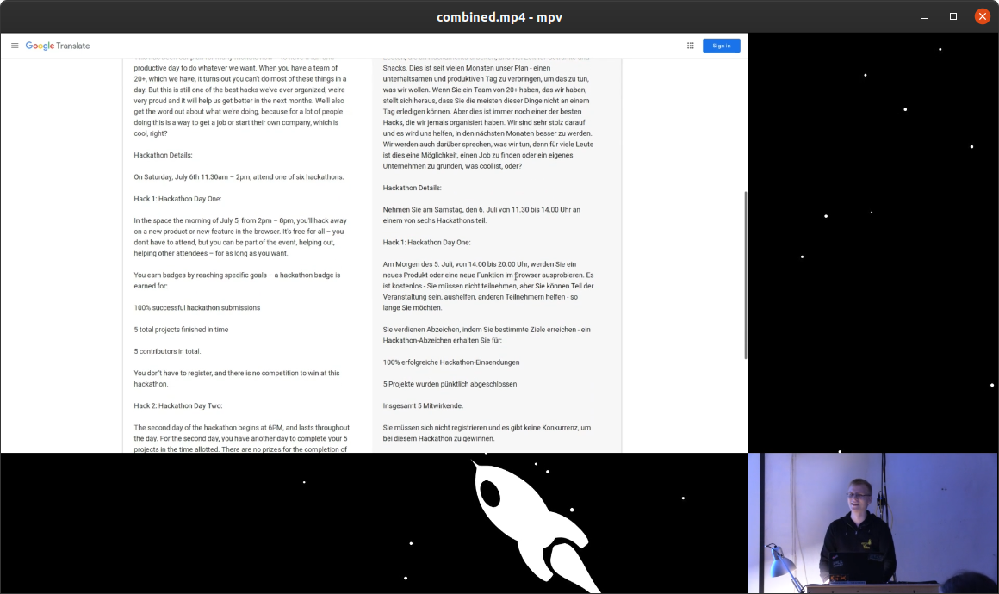

A while ago, we, the Chaos Computer Club Kassel, flipdot e.V., organized a public event, called the hackumenta. Our talks were recorded and we wanted to published them at meda.ccc.de. Speaker and slides were separately recorded and need to be synced, merged, and cut, so I've created a little ffmpeg-toolchain.
This is the result:
The final toolchain is available at github.com/flipdot/0xA-voc-toolchain (subject to change).
It works by consecutively executing the numbered bash scripts. But first, set INPUT_DIR and
WORKING_DIR in settings.env.
Install all required packages:
$ sudo apt install ffmpeg sox audacity mpv libxi-dev mesa-common-dev
$ nvm use 8
$ npm install -g https://github.com/transitive-bullshit/ffmpeg-concat.git#feature/optimize-frames
$ git clone https://github.com/flipdot/0xA-voc-toolchain.git
$ cd 0xA-voc-toolchain
$ vim settings.env
$ ./1_preprocess_raw_files.sh
$ ./2_extract_audio.sh
$ ./3_align_inputs.sh
$ ./4_create_time_marks.sh
$ ./5_combine_videos.sh
$ ./6_add_intro_outro.sh
Each script will iterate through all directories inside INPUT_DIR / WORKING_DIR and execute commands
inside of them.
1. Preprocess raw files
Script: 1_preprocess_raw_files.sh
Let's begin by taking a look at our raw video material:
INPUT_DIR
├── 01_Opening
│ ├── cam.MP4
│ ├── intro.mp4
│ ├── screen_raw.avi
│ └── title.txt
├── 02_CUDA_Basics
| ├── cam_01.MP4
| ├── cam_02.MP4
│ ├── intro.mp4
| ├── screen_raw.avi
| └── title.txt
├── background.mp4
└── outro.mp4
Due to our recording setup, we ended up with multiple "cam_xx.MP4" files, depending on the length of the
talk. Using ffmpeg -f concat together with a loop for the -i parameter allows us to combine all
cam_xx.MP4 files into a single cam.mp4.
Also, the screen recordings were uncompressed.
ffmpeg -hwaccel vaapi -vaapi_device /dev/dri/renderD128 -c:v h264_vaapi allows us to efficiently re-encode
the recordings as H264.
Let's run the above commands by executing
1_preprocess_raw_files.sh.
It will produce these files:
WORKING_DIR
├── 01_Opening
│ ├── cam.mp4
│ ├── intro.mp4
│ └── screen.mp4
├── 02_CUDA_Basics
│ ├── cam.mp4
│ ├── intro.mp4
│ └── screen.mp4
├── background.mp4
└── outro.mp4
2. Extract and normalize audio
Script: 2_extract_audio.sh
The cam- and screen recordings are not in sync and need manual adjustment. To do this adjustment, we first
need an audio file for each cam- and screen recording. By using ffmpeg -vn, we can remove the video track
(“video no”).
To improve the volume of the recordings, we utilize sox. It normalizes every audiofile:
sox --norm $INPUT $OUTPUT.
After executing 2_extract_audio.sh,
we have two new files for each video in our working tree:
WORKING_DIR
├── 01_Opening
│ ├── cam_normalized.wav
│ ├── screen_normalized.wav
│ └── ...
└── 02_CUDA_Basics
├── cam_normalized.wav
├── screen_normalized.wav
└── ...
3. Align cam and screen recording
Script: 3_align_inputs.sh
The manual adjustment of cam- and screen recording will be assisted by this script. It will start audacity for every talk, opening both wav-files in a single audacity project:

In the upper track you can see the waveform of the cam recording, in the lower track the waveform of the screen recording. Select the “Time Shift Tool” by pressing F5 or clicking on this button:

Now, move the lower track with your cursor until it is aligned with upper track. Pay attention to strong peaks in the waveform, they make the alignment more easy. Playing both files and listening to the audio helps confirming a correct adjustment.

After aligning the tracks, you need to determine the offset. To do so, pick the “Selection Tool” by pressing F1, and click on the left edge of the second track. In the lower section of audacity, the offset is printed below the ”Start and End of Selection” label.

Keep this timestamp in mind and close audacity. In your terminal, the script now prompts you for this timestamp. Enter it.

The timestamp you entered will be validated by a regular expression and saved to a text file:
WORKING_DIR
├── 01_Opening
│ ├── screen_offset.txt
│ └── ...
└── 02_CUDA_Basics
├── screen_offset.txt
└── ...
4. Search for start and end of the talk
Script: 4_create_time_marks.sh
A bit more manual work is required. Between the start of the recording and the beginning of the talk are a couple of minutes that need to be removed. This script opens mpv with a timestamp in the OSD and asks you to search for the start of the talk.
These are useful hotkeys for mpv:
- , – One frame backward
- . – One frame forward
- [ – Decrease playback speed
- ] – Increase playback speed

After you found the timestamp, close mpv. Once again, you will be asked to enter that timestamp. After you entered it, mpv will open again - but it will start playing from the timestamp you entered. This allows you to make sure that the timestamp is set correctly and no words are cut off.

The same procedure will be repeated for the end of the talk to get both timestamps. After you are done with all talks, your working directory will look like this:
WORKING_DIR
├── 01_Opening
│ ├── talk_end.txt
│ ├── talk_start.txt
│ └── ...
└── 02_CUDA_Basics
├── talk_end.txt
├── talk_start.txt
└── ...
5. Create a splitscreen of both videos
Script: 5_combine_videos.sh
With the timemarks inside our textfiles, we can now generate a splitscreen with both the cam and the
screen recording, synchronized. We will also add a background animation, which was copied earlier from
$INPUT_DIR/background.mp4 to $WORKING_DIR/background.mp4.
In our case, we had one more issue with our recording setup: The audio embedded in the screen recording
is not in-sync with the video of the screen recording. It has a constant delay of about 500ms. We can
fix that by using ffmpeg -itsoffset $SCREEN_AUDIO_OFFSET. The offset variable is defined inside
settings.env.
Execute ./5_combine_videos.sh and lean back. Your working directory will contain a new file combined.mp4:
WORKING_DIR
├── 01_Opening
│ ├── combined.mp4
│ └── ...
└── 02_CUDA_Basics
├── combined.mp4
└── ...
And it will look like this:

6. Add intro and outro
Script: 6_add_intro_outro.sh
To finalize the video, we want to concat an intro and an outro to each file. FFmpeg filter graphs are
very powerful, but it is pretty difficult to create simple transitions with them. Therefore, we will
be using ffmpeg-concat for this task. We need
to use the features/optimize-frames branch - otherwise, tons of gigabytes will be consumed in our
/tmp directory. Checkout this pull request –
if it was merged, you can use the master version.
ffmpeg-concat also does not keep the audio of the inputs
(issue #4). We work around this by
calling ffmpeg yet another time after concatenation, copying back our audio stream. Fortunately,
this does not require de- and encoding of the video. We will also add an intro.wav, so we will
get a fancy intro sound. This requires re-encoding of the audio, but compared to video-encoding
this is quite fast.
And there you have it – a final output.mp4 consisting of the intro, talk with cam and screen recording,
and outro.
The talks are available at media.ccc.de/c/hackumenta19.